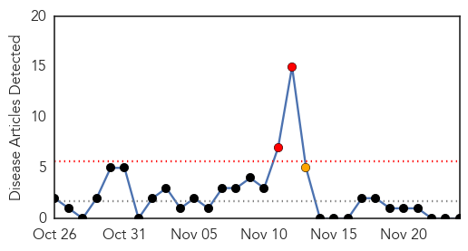

Swine Flu
30-Day Web Trend
2 alerts, 0 warnings
30-Day Twitter Trend
0 alerts, 0 warnings

Article Locations

Article Confidences
Top Articles:
- 0.999
- Swine flu kills woman in Egypt
- 0.988
- Supercomputer takes on super flu
- 0.930
- Pregnant Egyptian woman dies of H1N1 swine flu
- 0.715
- Infant Mortality Rate: Blame it on Lack of Initiative to go International
- 0.692
- Merrillville School Closed For Disinfection After Students Contract Swine Flu « CBS Chicago
Top Tweets:
-
No tweets found for Nov 24, 2014
Hepatitis
30-Day Web Trend
2 alerts, 1 warnings

30-Day Twitter Trend
0 alerts, 0 warnings

Article Locations

Article Confidences

Top Articles:
-
No articles found for Nov 24, 2014
Top Tweets:
-
No tweets found for Nov 24, 2014